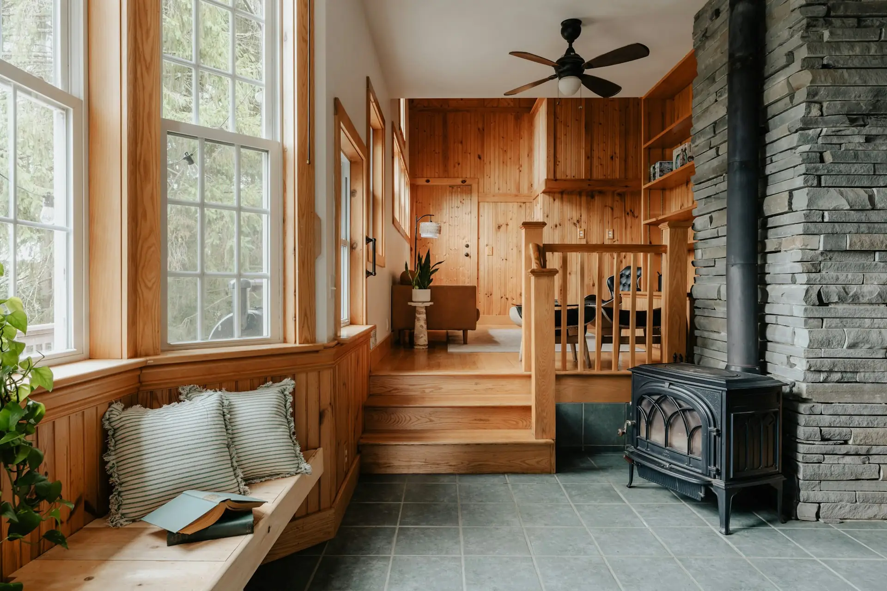
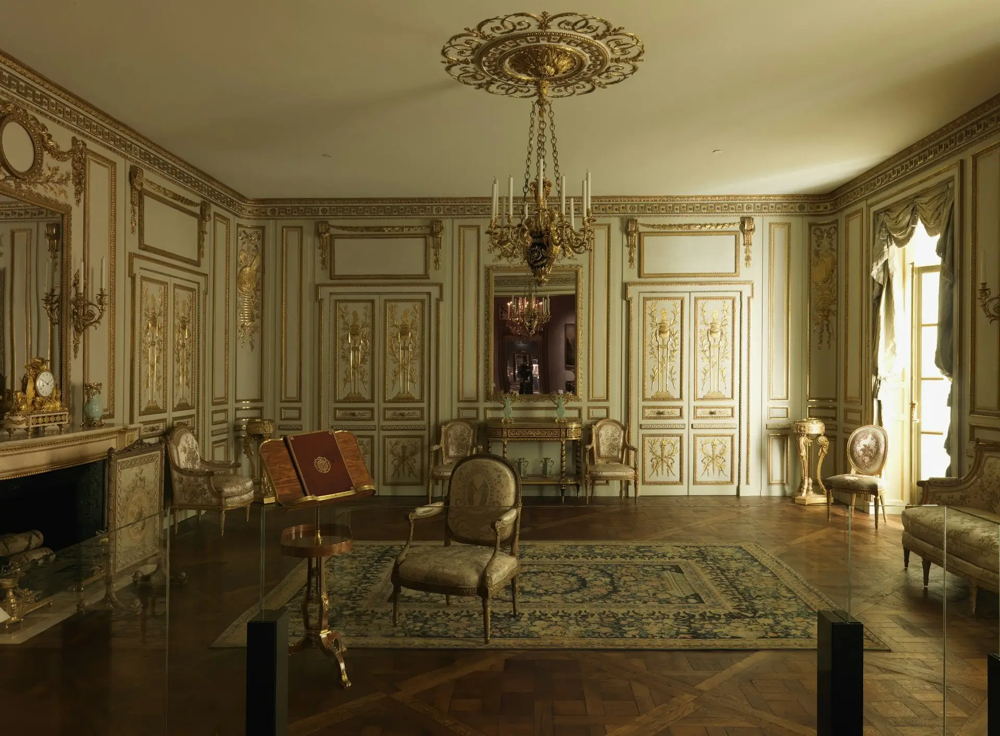

Peinture et rénovation
à Annecy.
Appartement près du lac, maison sur les hauteurs ou chalet en bois : chaque intérieur demande ses propres produits.
À Annecy, on vient
souvent pour…
Un chalet à rafraîchir
Murs, plafonds en lambris, boiseries : on éclaircit sans faire disparaître le bois.
Un appartement loué en saisonnier
Une remise en peinture rapide et propre, calée entre deux saisons.
Des enduits à la chaux
Pour des murs qui gardent du relief et de la matière, en accord avec la pierre et le bois.
Un conseil couleur
Trouver le blanc, le beige ou le vert qui tient compte de la lumière de la pièce.
Bois, pierre
et lumière.
- Métiers
- Rénovation intérieure et peinture
- Secteur
- Annecy · Haute-Savoie (74)
- Atelier
- Gières (38), à environ 105 km
- Artisan
- David, Compagnon du Devoir
Autour d’Annecy, on travaille beaucoup avec le bois. Lambris qui ont jauni, poutres à éclaircir, menuiseries à remettre au propre. Le bois ne se traite pas comme un mur en plâtre : il bouge, il boit, et il faut choisir entre peinture, lasure ou huile selon l’effet voulu.
Les écarts de température entre l’hiver et l’été sollicitent aussi les supports. On privilégie des produits qui respirent, comme les peintures minérales ou la chaux, là où ils ont du sens.
Côté couleurs, la lumière du lac est assez froide le matin. On teste donc les teintes sur place avant de valider quoi que ce soit.
Autour
du lac.
Pour les stations et les hameaux plus haut, on regarde l’accès et la période ensemble.
Bon
à savoir.
Peut-on repeindre des lambris anciens ?
Oui, après un bon lessivage, un ponçage léger et une sous-couche qui bloque les remontées de tanin. Sans ça, le bois jaunit à travers la peinture.
Quelle période choisir pour un logement loué ?
Le printemps et l’automne, hors saison touristique. Prévenez-nous tôt : ce sont aussi les périodes les plus demandées.
Vous intervenez en altitude ?
Oui, selon l’accès et la saison. On en parle lors du premier appel pour éviter les mauvaises surprises.

Boiserie de l’hôtel de Cabris, Grasse, v. 1774 · The Met, domaine publicUn chalet à rafraîchir ?
Une fourchette en une minute, puis une visite pour voir le bois de près.